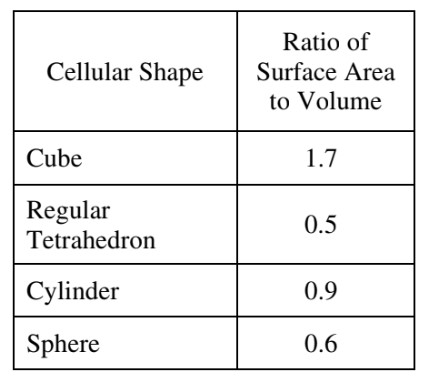

In an experiment, the efficiency of oxygen exchange across the plasma membrane is being assessed in four artificial red blood cells. The table above lists some properties of those artificial cells. Other conditions being equal, which artificial cell is predicted to be the most efficient in exchanging oxygen with the environment by diffusion?